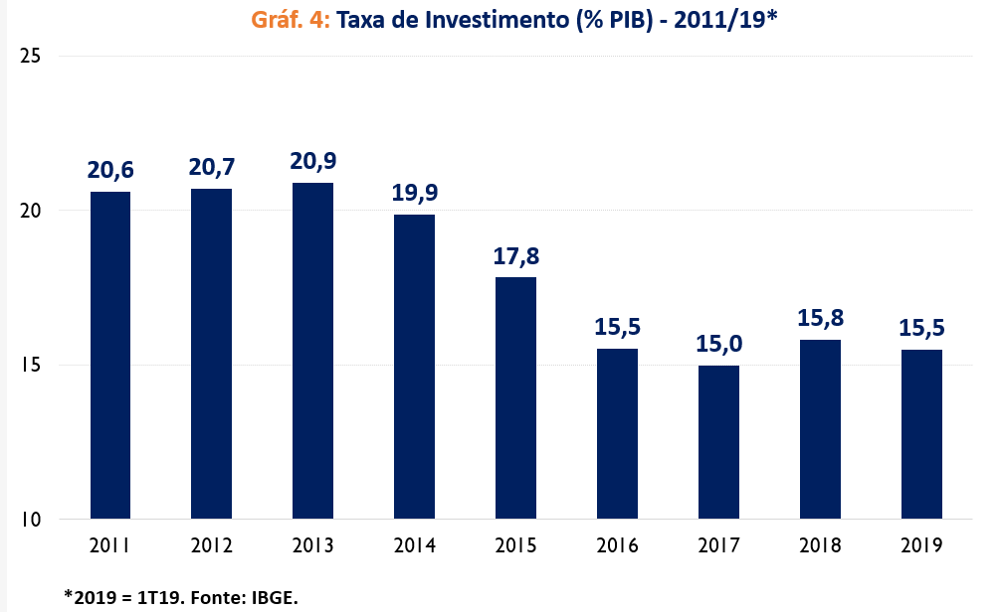
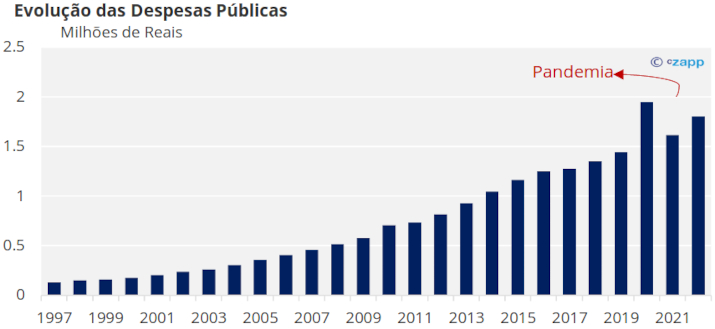

Características:
Como funciona o crescimento econômico?
O crescimento econômico refere-se ao aumento da produção de bens e serviços em uma economia ao longo do tempo. Esse crescimento é um indicativo de que uma economia está se expandindo e se tornando mais produtiva, resultando em uma maior oferta de produtos e serviços disponíveis para a população.
Entretanto, é importante entender que nem todos os bens e serviços são avaliados da mesma maneira. Por exemplo, um carro é geralmente considerado mais valioso do que um caldo de cana ou um copo de suco. Essa diferença de valor é essencial para compreender o crescimento econômico, pois ele deve ser medido não apenas em termos de quantidade de produtos, mas também pelo valor econômico que esses produtos e serviços representam.
Um desafio significativo nessa abordagem é que as pessoas atribuem valores diferentes a produtos e serviços, dependendo de suas necessidades e contextos. Por exemplo, um ar-condicionado é considerado muito mais valioso no Rio de Janeiro, onde as temperaturas são frequentemente elevadas, em comparação ao Rio Grande do Sul, onde o clima é mais ameno. Isso demonstra que a percepção de valor é subjetiva e pode variar de uma pessoa para outra e de uma região para outra.
Consequentemente, mensurar o crescimento econômico com base no valor agregado de bens e serviços se torna uma tarefa complexa. Essa subjetividade no valor pode dificultar a análise e a comparação do crescimento econômico entre diferentes regiões e setores, já que a mesma mercadoria pode ter um valor distinto dependendo do local e das circunstâncias em que é consumida. Portanto, o entendimento do crescimento econômico requer uma análise cuidadosa, que considere tanto a quantidade quanto a percepção de valor dos bens e serviços na sociedade.
Diferença entre crescimento e desenvolvimento econômico.
Muitas vezes, os termos crescimento econômico e desenvolvimento econômico são usados como se fossem sinônimos.
No entanto, ambos possuem significados diferentes: crescimento é quando há um aumento quantitativo na produtividade, gerando enriquecimento que pode ser medido por métricas como o produto interno bruto (PIB).
Entretanto, o desenvolvimento econômico envolve, além do crescimento em produtividade, uma melhora nas condições sociais de um país.
Dessa forma, esse desenvolvimento econômico é medido através de métricas de saúde, educação, segurança e tantos outros fatores sociais.
Geralmente, métricas como o Índice de Desenvolvimento Humano (IDH), que faz uma união de todos os fatores sociais de uma região, são usadas para averiguar o desenvolvimento econômico de um local.
Maiores influências no PIB do Brasil
1. Consumo das famílias: O consumo das famílias considera o gasto das pessoas. Quanto maior o gasto, maior o crescimento econômico, resultando em um aumento do PIB.

2. Investimento das empresas: O investimento das empresas é fundamental, uma vez que, quanto maior o crescimento das empresas, maior a movimentação econômica, fazendo o PIB aumentar.
3. Gastos governamentais: Quando os gastos governamentais aumentam através de obras de infraestrutura, contratações, produtos e serviços, o PIB aumenta por causa do crescimento econômico.
